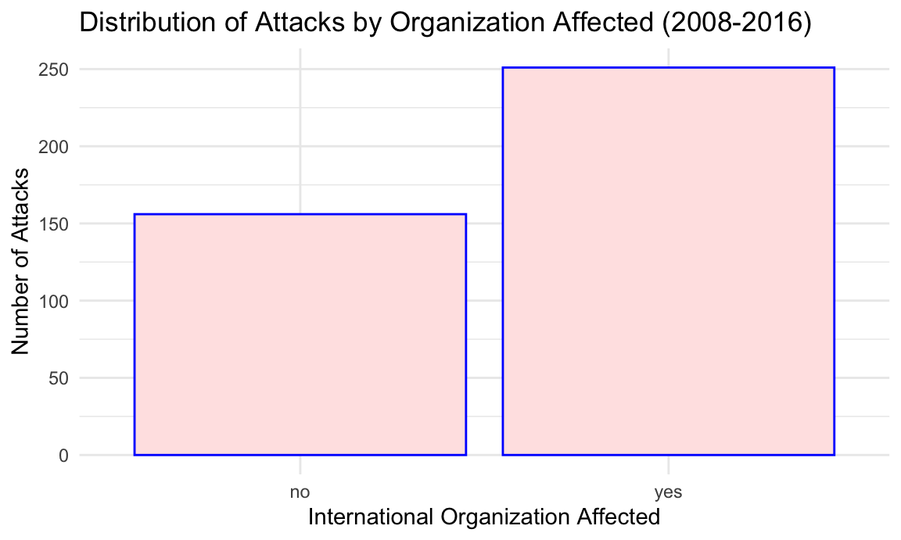
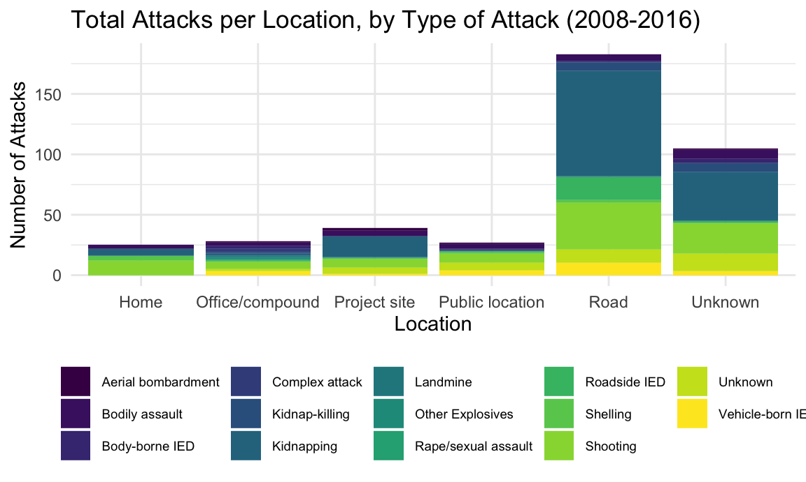
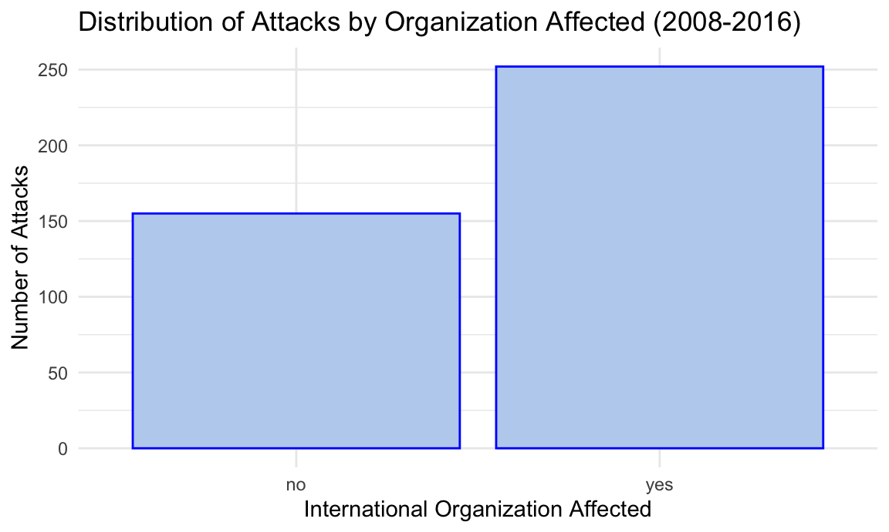
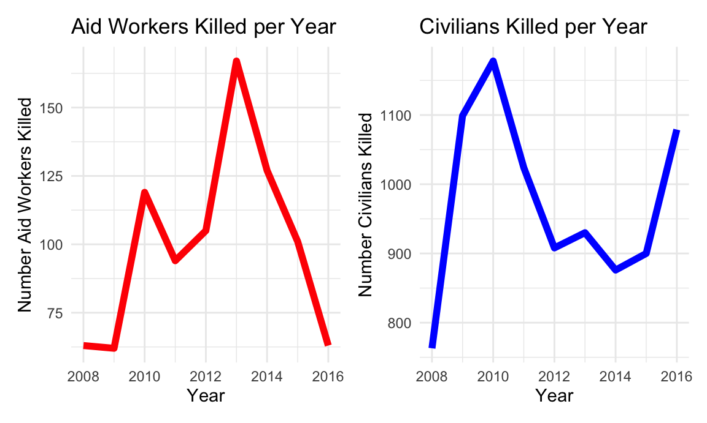

Afghanistan
#Kailey notes: from section 1 cleaning and filtered for afghanistan/year
url = "https://aidworkersecurity.org/incidents/search"
aidworker_html = read_html(url)
aidworker_df =
aidworker_html %>%
html_nodes(css = "table") %>%
first() %>%
html_table() %>%
as_tibble()
afghan_aidworker_df =
aidworker_df %>%
janitor::clean_names() %>%
select(-source, -verified) %>%
rename(year = year_sort_descending) %>%
mutate(intl_org_affected =
case_when(
un != 0 ~ "yes",
ingo != 0 ~ "yes",
icrc != 0 ~ "yes",
ifrc != 0 ~ "yes",
other != 0 ~ "yes",
lngo_and_nrcs != 0 ~ "no"),
intl_org_affected = as.factor(intl_org_affected)) %>%
relocate(id, month, day, year, country, intl_org_affected) %>%
filter(country == "Afghanistan") %>%
filter(year %in% c("2008", "2009", "2010", "2011", "2012", "2013", "2014", "2015", "2016")) As depicted in the data table in our exploration of global trends, Afghanistan has been the deadliest country for aid workers by far. In conjunction with U.S. occupation of Afghanistan, the statistics associated with this country merit a closer look: focusing on the years 2008 to 2016 in which the greatest number of attacks occurred.
Map of Aidworker Attacks in Afghanistan
This map shows locations and details of aidworker attacks in Afghanistan. Information about the process of spatial georeferencing is noted in the AWSD Methodology.
afghanistan_df =
afghan_aidworker_df %>%
mutate(
latitude = as.numeric(latitude),
longitude = as.numeric(longitude)
) %>%
drop_na(longitude, latitude) %>%
filter(id != 2050)
fixing_error_df =
afghanistan_df %>%
filter(year == 2016) %>%
filter(means_of_attack == "Kidnapping") %>%
select(id, year, total_victims, latitude, longitude)
leaflet(afghanistan_df) %>%
addProviderTiles(providers$CartoDB.Positron) %>%
addMarkers(lat = ~latitude, lng = ~longitude,
popup = paste("Total Victims:", afghanistan_df$total_victims, "<br>", "Means of Attack:", afghanistan_df$means_of_attack, "<br>", "Year:", afghanistan_df$year, "<br>", "Country:", afghanistan_df$country), clusterOptions = markerClusterOptions())International vs. National NGO Staff Deaths
International staff refers to NGO staff that are not of local origin. National NGO staff refers to Afghan people; these staff may work for international NGOs (including UN agencies or the International Committee of the Red Cross) or local NGOs.
afghan_aidworker_international_df =
afghan_aidworker_df %>%
group_by(year) %>%
summarise(sum(internationals_killed)) %>%
mutate(
internationals_killed_tot = `sum(internationals_killed)`
) %>%
select(year, internationals_killed_tot)
afghan_aidworker_national_df =
afghan_aidworker_df %>%
group_by(year) %>%
summarise(sum(nationals_killed)) %>%
mutate(
nationals_killed_tot = `sum(nationals_killed)`
) %>%
select(year, nationals_killed_tot)
afghan_aidworker_df_new =
left_join(afghan_aidworker_international_df, afghan_aidworker_national_df, by = "year")
afghan_aidworker_df_new %>%
ggplot(aes(x = year, y = internationals_killed_tot, col = "International")) +
geom_line() +
geom_line(aes(x = year, y = nationals_killed_tot, col = "National")) +
labs(
title = "Number of Aid Workers Killed By Origin (National vs. International)",
x = "Year",
y = "Number Killed"
)
Contextual Factors
2012 - The significant drop in aid worker death coincides with the withdrawal of half of American troops in Afghanistan.
2013 - A sharp increase in aid worker deaths, primarily in rural areas. In 2013, aid workers were frequently caught in crossfire, ambush, and accidents, especially as tensions between government and insurgent groups rose sharply. As you can see in this figure, a majority of aid workers killed are of national origin. According to a report published by the UN in 2013, “Afghan aid workers suffered heavy casualties in part because international organizations were using local staff and local organizations to reduce their own risk…About 85 per cent of United Nations staff involved in security incidents were Afghans; for international non-governmental organizations, it was 76 per cent.” It is important to note here that national aid workers are more frequently engaged in front line work than their international counterparts, especially in extremely dangerous operations. “Security arrangements of those organizations and the United Nations often left local humanitarian organizations less secure”. National aid workers, often acting for international aid organizations, rarely received the same security protections as their international colleagues, forcing them into increasingly unsafe situations.
After noting this sharp increase in attacks against local aid workers, many aid organizations took steps to decrease apparent distinctions between international and national aid workers in an effort to protect national aid workers’ security.
 ICRC staff in Afghanistan (via UN News)
ICRC staff in Afghanistan (via UN News)
Attack Types
Aid workers are uniquely vulnerable to attacks given the dangerous settings in which they work. While aid workers are somewhat protected by International Humanitarian Law and the organizations they work with, this does not guarantee safety, especially in conflict-heavy contexts.
means_attack_p =
afghan_aidworker_df %>%
plot_ly(
x = ~year, y = ~total_victims, color = ~means_of_attack,
type = "scatter") %>%
layout(
title = "Victims per year by attack type")
attack_context_p =
afghan_aidworker_df %>%
plot_ly(
x = ~year, y = ~total_victims, color = ~attack_context,
type = "scatter") %>%
layout(
title = "Victims per Year by Attack Context (Left) and Attack Type (Right)")
subplot(means_attack_p, attack_context_p)Of known attack types affecting aid workers in Afghanistan, the most common are kidnappings, shootings, ambushes, and raids. The largest attack was a 2015 aerial bombardment by the U.S. military, in which aid workers were caught in combat/crossfire that left 19 dead and 37 wounded (including patients and aid workers).
On October 3rd, 2015, following Taliban insurgents storming the capital, the U.S. military conducted a 4-hour airstrike that repeatedly and precisely hit a trauma hospital run by Médecins Sans Frontières (MSF, Doctors Without Borders), destroying the main hospital building. Patients unable to escape burned to death, while hospital staff scrambled to evacuate as many patients as possible. Since its opening in 2011, the MSF Kunduz hospital had become an important lifeline for thousands. On the night of the attack, 105 patients and 140 MSF staff were present in the hospital.
The military initially justified the attack by claiming reports of Taliban militia on-site. MSF reported the hospital was clearly marked with updated GPS coordinates provided to American and Coalition forces as recently as one week before the attack. Furthermore, bombing continued for 30 minutes after MSF urgently communicated to military leadership that a hospital was being hit. Eventually, the U.S. stated that the airstrike was accidental. MSF has repeatedly called for an independent investigation of possible war crimes, which has not occurred.
 MSF hospital in Kunduz, post-U.S. air strike (via MSF)
MSF hospital in Kunduz, post-U.S. air strike (via MSF)
{kind=link}
Location of Attack
Aid workers are targeted in a variety of settings.
afghan_aidworker_df %>%
ggplot(aes(x = location, fill = means_of_attack)) +
geom_bar() +
labs(
title = "Total Attacks per Location, by Type of Attack (2008-2016)",
x = "Location",
y = "Number of Attacks"
) +
theme(legend.text=element_text(size=7)) +
theme(legend.title = element_blank())
Aid workers are most vulnerable when traveling on the road. In many of these incidents, aid workers are collateral damage, caught in the crossfire between government vehicles (Afghan National Army and International Security Assistance Force) and insurgent groups. After the International Security Assistance Force withdrew in 2011, road ambushes and attacks increased substantially.
Roads are extremely difficult to protect. Attacks and ambush can come in the form of illegitimate checkpoints, road blocks, and geographically poorly protected areas (bends in the road, choke points). Drive-by shootings, carjacking, and IEDs (landmines) also represent major challenges to road travel. IEDs do not involve significant planning and are difficult to predict and avoid, making them especially common and particularly dangerous, as you can see in the figure above.
 Taliban attack on USAID (via BBC)
Taliban attack on USAID (via BBC)
Attacks Targeting Organizations
Type of organization is important, especially when it comes to attacks by local actors such as the Taliban and Islamic State. Resistance to the West makes international NGOs particularly vulnerable.
afghan_aidworker_df %>%
ggplot(aes(x = intl_org_affected)) +
geom_bar(color = "blue", fill = "lightsteelblue2") +
labs(
title = "Distribution of Attacks by Organization Affected (2008-2016)",
x = "International Organization Affected",
y = "Number of Attacks"
)
International organizations are more frequently targeted, especially in Afghanistan, due to local mistrust of international actors. Between the years of 2008-2016, these acts of violence were primarily perpetrated by the Taliban.
 Islamic State militants bombed and sieged a Save the Children building in Jalalabad, Afghanistan in 2018 (via BBC)
Islamic State militants bombed and sieged a Save the Children building in Jalalabad, Afghanistan in 2018 (via BBC)
Aidworker vs. Civilian Death
Aidworkers and civilians are both extremely vulnerable during conflicts, but in different ways. In Afghanistan, both groups’ mortality has been severely affected by U.S. military occupation.
#Looking at deaths among all civilians verses all aidworkers side by side
#Aidworkers, from the Aidworker dataset:
aidworker_deaths_p =
afghan_aidworker_df %>%
group_by(year) %>%
summarise(sum(total_victims)) %>%
mutate(
tot_victims = `sum(total_victims)`
) %>%
select(-`sum(total_victims)`) %>%
ggplot(aes(x = year, y = tot_victims)) +
geom_line(color = "red", size =2) +
labs(
title = "Aid Workers Killed per Year",
x = "Year",
y = "Number Aid Workers Killed"
)
#All civilians, from the Uppsala dataset:
afghan_upp_df =
read_csv("./data/afghanistan_uppsala.csv") %>%
janitor::clean_names() %>%
filter(year %in% c("2008", "2009", "2010", "2011", "2012", "2013", "2014", "2015", "2016")) %>%
select(year, deaths_civilians) %>%
group_by(year) %>%
summarise(sum(deaths_civilians)) %>%
mutate(
deaths_civilians_tot = `sum(deaths_civilians)`
) %>%
select(-`sum(deaths_civilians)`)
civilian_deaths_p =
afghan_upp_df %>%
ggplot(aes(x = year, y = deaths_civilians_tot)) +
geom_line(color = "blue", size =2) +
labs(
title = "Civilians Killed per Year",
x = "Year",
y = "Number Civilians Killed"
)
# use patchwork to make two separate plots and have them side-by-side
aidworker_deaths_p + civilian_deaths_p
A Brief Timeline
2010 - The spike in deaths of both aid workers and civilians coincides with a 50% increase in U.S. Military presence in Afghanistan that occurred in late 2009.
2011 - Bin Laden was killed by the U.S. Army and CIA.
2013 - Tensions spike between insurgent groups and government forces, with deadly results.
2014 - Obama announces official removal of U.S. troops from Afghanistan. A new Afghan president is elected.
 U.S. Troops in Afghanistan (via Al Jazeera)
U.S. Troops in Afghanistan (via Al Jazeera)